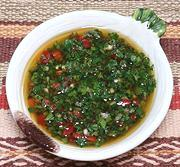

|
ChimichurriArgentina / Uruguay - Chimichurri | ||||
| Makes: Effort: Sched: DoAhead: |
1-3/4 cups ** 30 min Yes |
This is the essential condiment for serving with grilled meats in Argentina, and without grilled meats, can there even be an Argentina? It's also used with poultry and fish. | |||
|
------ 1/2 1 2 3 ------ 1 1/2 1/4 1 1/2 |
--- c T oz cl --- t c c t t |
-- Herbs Parsley, flat (1) Oregano, fresh (2) Red Chili, fresh (3) Garlic ----------- Aji Molido (4) Olive Oil, ExtV Wine Vinegar, red Salt Pepper, black |
Measures for all Herbs items are moderately packed after they have been chopped fine - see Chopping. Make - (30 min - all hand chopped)
|